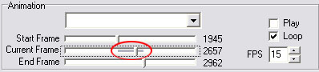
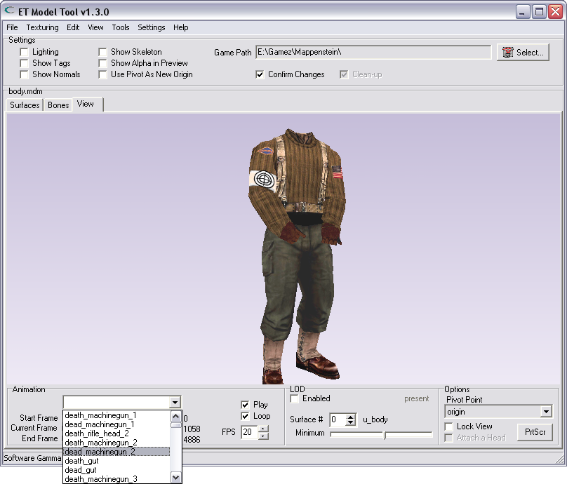
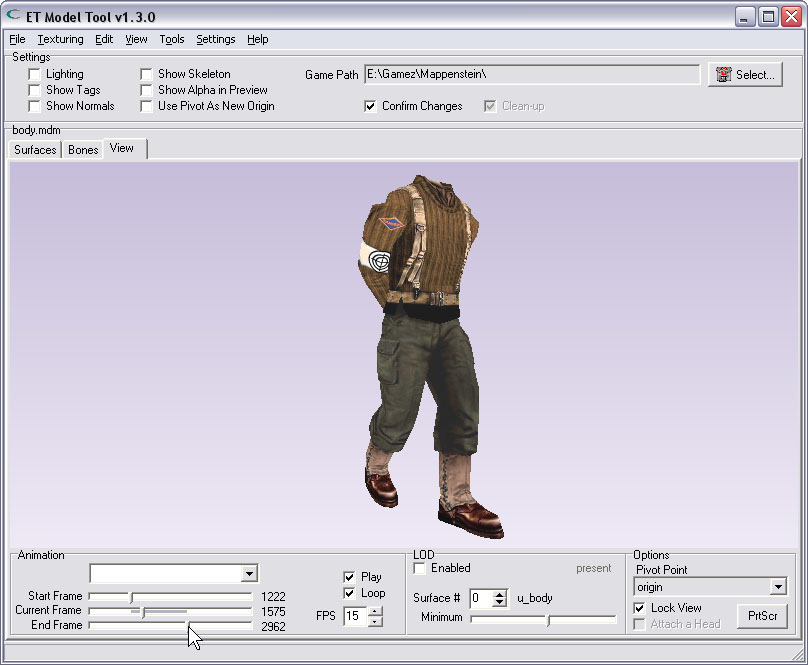
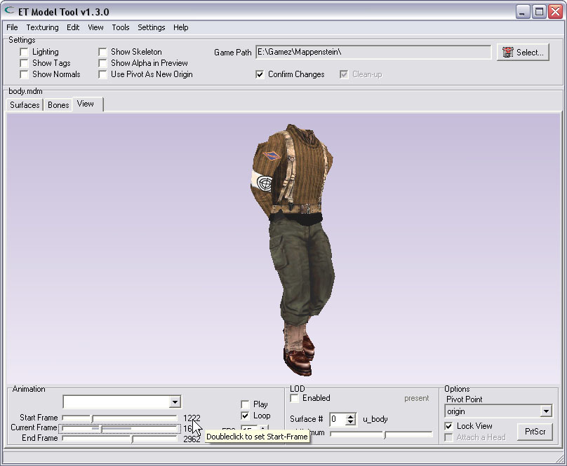
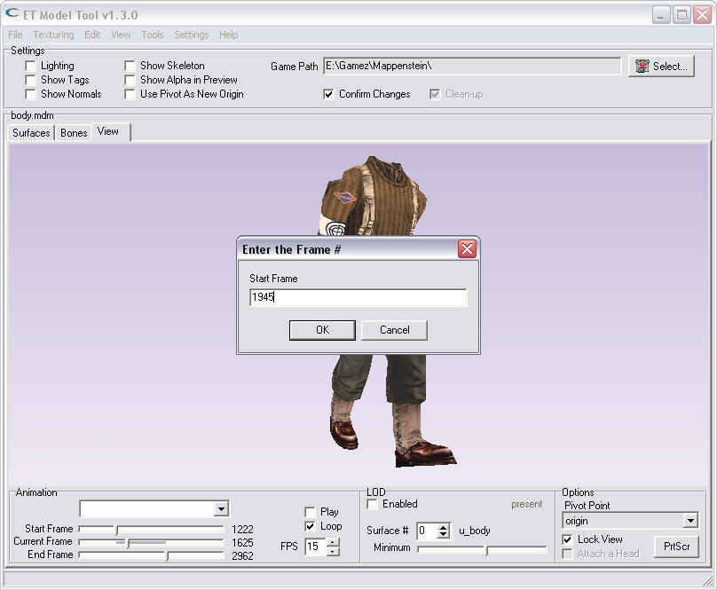

| Selecting a range of frames | |
| To make an animation, with only a selected number of frames, You must set a frames-range on the 'View'-Tab. The 'Animation'-Panel on the lower-left has 2 sliders that are used to set the range. There is one slider to set the 'Start Frame', and one slider to set the 'End Frame'. The range will also be indicated by a colored range on the 'Current Frame'-slider. Note: The 'Current Frame'-slider is not used for setting a frames-range.. and if You want to change the current-frame, You would first have to disable playback, change the slider, then enable playback again ('Play'-checkbox). | |
|  | |
| After loading an MDM/MDX | |
| Only after loading an MDM/MDX playermodel You can use the dropdown-listbox to select a named animation, and thereby its frames-range. This way of selecting the range is not possible after loading any other type of file. The 'Start Frame' & 'End Frame' will automaticly be set by the tool. You can still manually drag one of the sliders at any time if You want to change the range. | |
|  | |
| Dragging the sliders | |
| By dragging the sliders You change the length of the animation. If You want to change the current-frame, You would first have to disable playback, change the slider, then enable playback again ('Play'-checkbox) | |
|  | |
| Doubleclicking the values | |
| You can also set the positions of all 3 sliders by doubleclicking on the values just to the right of a slider. This will pop-up a dialog that asks the user to enter a framenumber manually. | |
|  | |
| Entering the framenumber: | |
|  | |